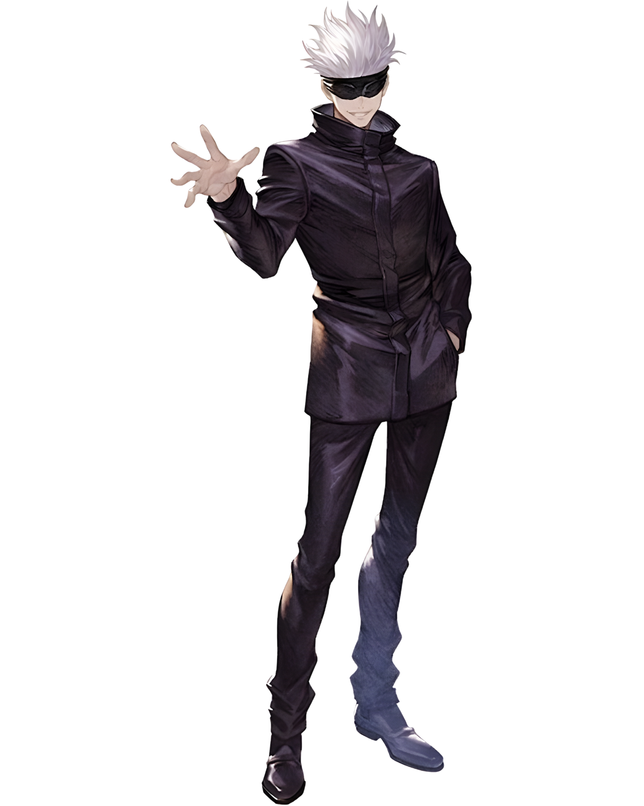

JUJUTSU KAISEN
Jujutsu Kaisen sigue a Yuji Itadori, un estudiante que se convierte en el recipiente del rey de las maldiciones, Ryomen Sukuna, al ingerir uno de sus dedos. Ahora debe unirse a la Escuela de Hechiceros de Jujutsu para ayudar a combatir a las maldiciones, unos espíritus nacidos de emociones negativas, mientras trabaja en secreto para encontrar y consumir los otros dedos de Sukuna y así evitar su resurrección
ELIGE A TU PERSONAJE


GOJO

SATORU GOJŌ
★★★★
Rounds
78
Time
38:24
Win Rate
100%
El Hechicero Supremo. Maestro de las artes místicas, manipula el tiempo y el espacio para proteger la realidad.